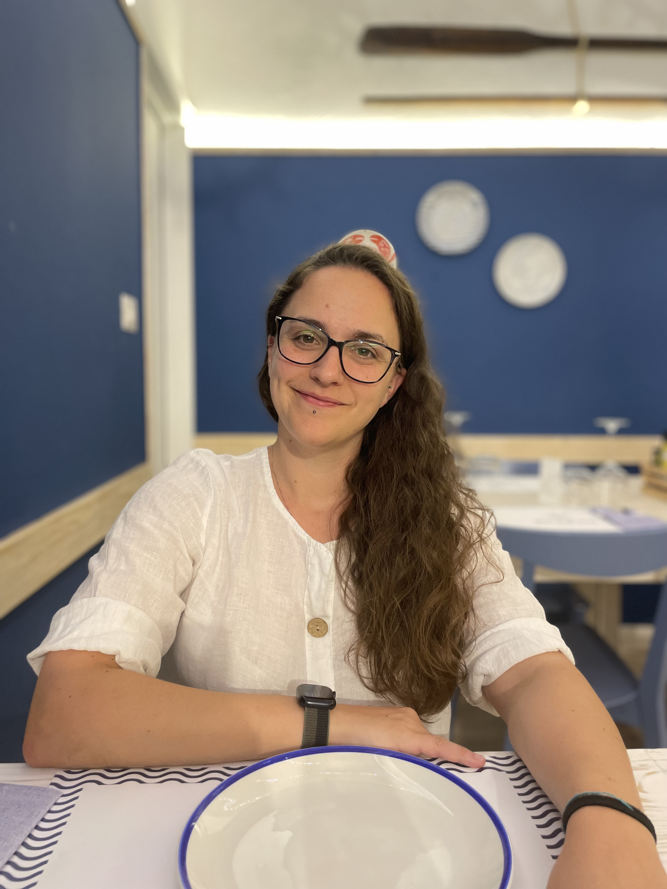

Angelica Brienza Resume

About Me:
I am an energetic and reliable person with a vast experience in vendor management,
customer support and team leading. Adept in providing helpful data analysis,
troubleshooting and efficiency improving ideas. A versatile team player with a passion for
learning and growing within an organisation.
Education & Trainings:
- Customer Service level 1&2 (2021 - 2022)
Decathlon, London
- Recruitment Training (2022)
Decathlon, London
- Efficient Time Management (2021)
Decathlon, London
- Bachelor Sport Science Degree (2011 - 2016)
Alma Mater Studiorum Bologna, Italy
- High School Diploma (2005 - 2010)
Cassiano da Imola, Italy
Employment History:
Decathlon UK (Jen 2020 - Ongoing)
Department Manager (Jun. 2021 - Ongoing)
Leading a group of employees to reach the goals settled for the department
Data analysis of the economic performance and forecast of the future sales
Orders and control of the stock availability
Planning of the schedules for the employees
Follow up of employees personal development throughout monthly individual meeting
Duty Manager (May 2020 - Ongoing)
Customer Service management
Coordination of the store throughout the day
Opening and closing procedure
Sport Leader (Jen. 2020 - Jun. 2021)
Building new partnership with local sports venue
Stock management related to important events-
Decathlon Italy (Jun. 2016 - Dec. 2019)
Sport Advisor (Jun. 2016 - Dec. 2019)
Restocking of the products in the department
Help customers on selecting the right products for their needs
Welcome desk duty: welcoming customers in store and deal with issue related to the
products
Planning of daily events to promote sport
Skills:
- Strategic Thinking
- Consistency
- Relator
- Empathy
- Positivity
Languages:
- Italian: Native
- English: Advance
- Spanish: Beginner
HTML Projects:
Birthday invite
Movie ranking
Contact me